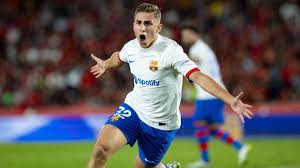
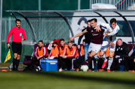
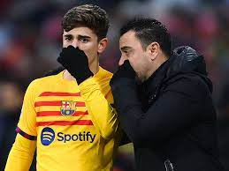
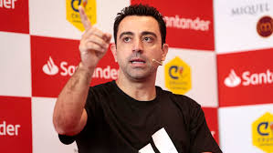

Razočaranje v Španiji, fantje se vrnili srebrni


Članska ekipa se je te sezone udeležila after-season turnirja "LaBlanca" v Španiji. Fantje so po težkih tekmah prišli do finala kjer so morali priznati premoč FC Barceloni z 4:1. Tekma se je odvila v Španiji, LLoret De Mar 29.4.2024 ob 21.00 uri. Fantje so se v Slovenijo vrnili srebrni na kar smo vsi ponosni. FC Barcelona : Fermin Lopez 31', 75' Lamine Yamal 79' Joao Cancelo 90+7'. NK Triglav : Tijan Gogić 46'(P).
FC Barcelona v kontaktu z Triglavom, ali se bodo Šmrkoviću vresničile sanje?


FC Barcelona je izrazila interes za mladega talenta Omarja Šmrkoviča. Ali bo ta poteza pripeljala do uresničitve njegovih sanj o igranju za enega največjih klubov na svetu? Po tekmi je trener Barcelone Xavi osebno pristopil do Šmrkoviča kjer sta imela kar nenavadno dolg pogovor. Po tekmi je Xavi dejal da je imel oko nad tem mladim gemom že kar nekaj časa in da je biu danes precej zadovoljen z njegovo predstavo. Trdi da v njem vidi mladega sebe. 17 letni član NK Triglava je v 1. Slovenski Telekom Ligi odigral 31 tekem v katerih je 5krat zadel in 14krat asistiral. V ligi prvakov je odigral le 2 tekme saj je proti Crveni Zvezdi dobil rdeč karton in disciplinsko kazen.
Slovenska liga razmišlja o večanju
Predstavniki Slovenske nogometne lige razmišljajo o možnosti povečanja števila klubov v prvi ligi. Predlog vključuje dodajanje dveh novih ekip, kar bi okrepilo konkurenco in dvignilo raven igre v slovenskem nogometu. Razprave so v zgodnji fazi, vendar bi se lahko odločitev sprejela že do konca tega letošnje sezone.